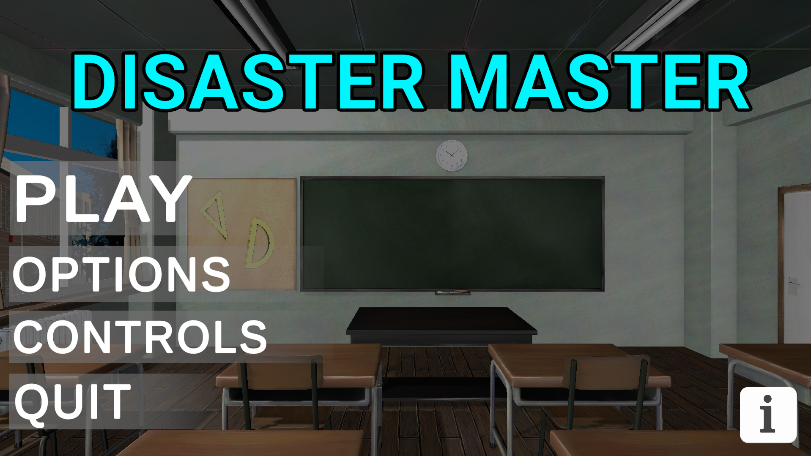
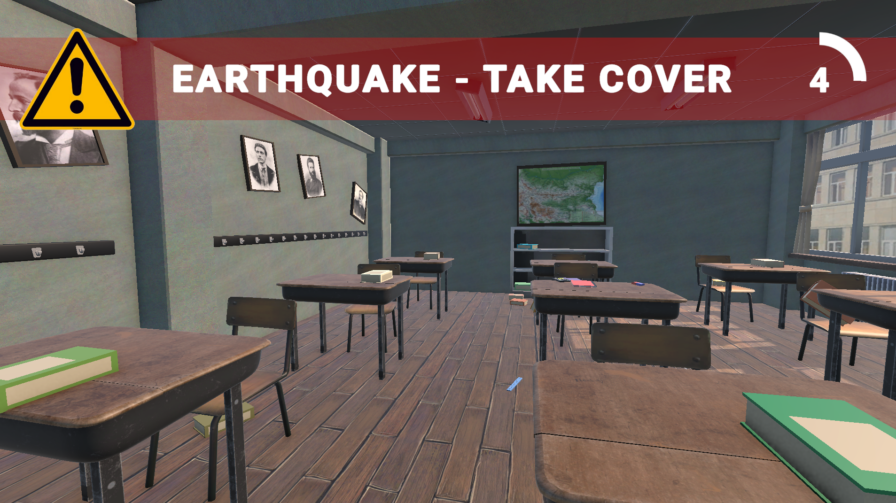
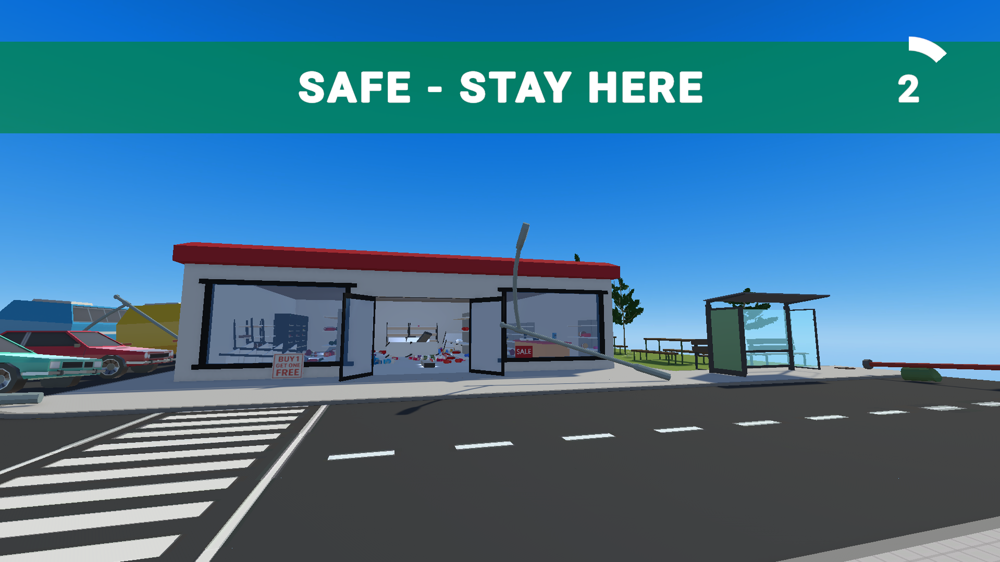
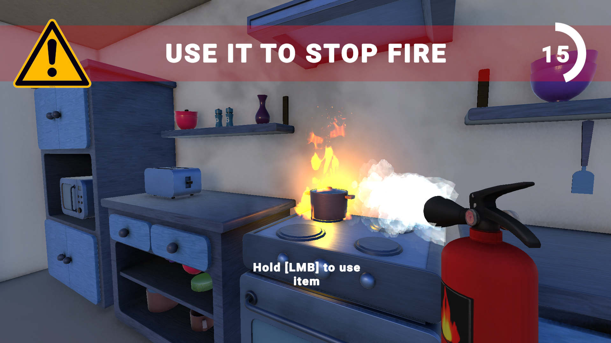
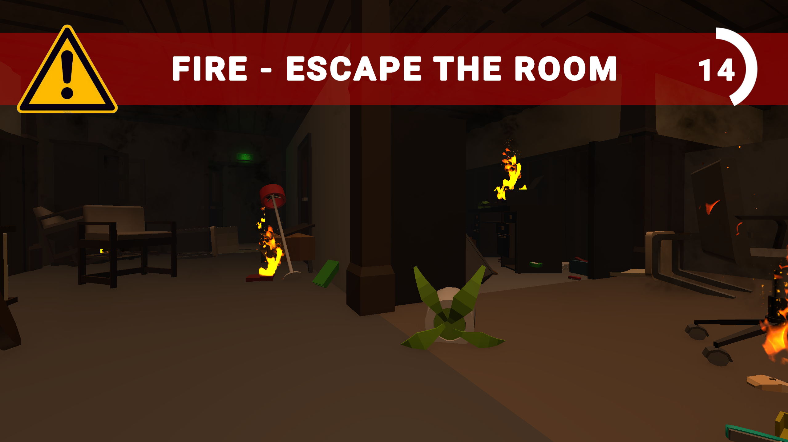
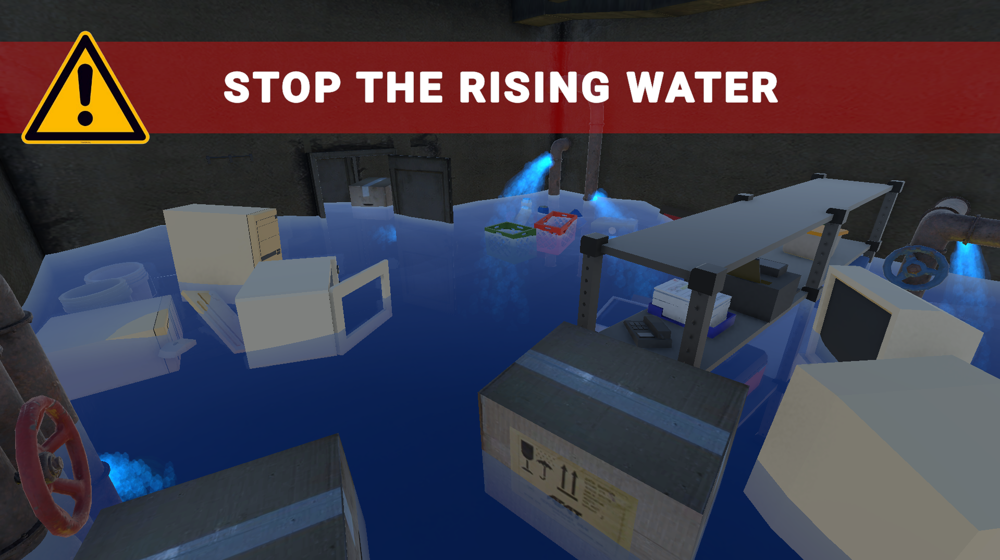
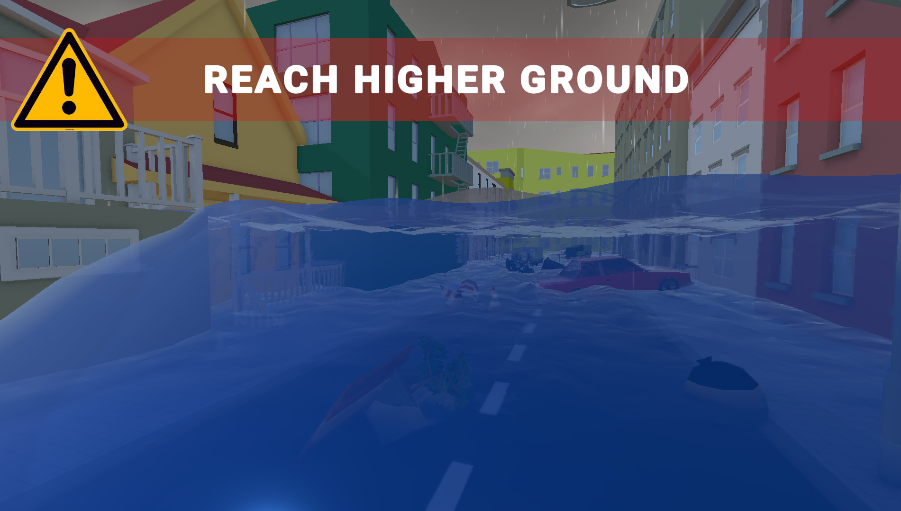
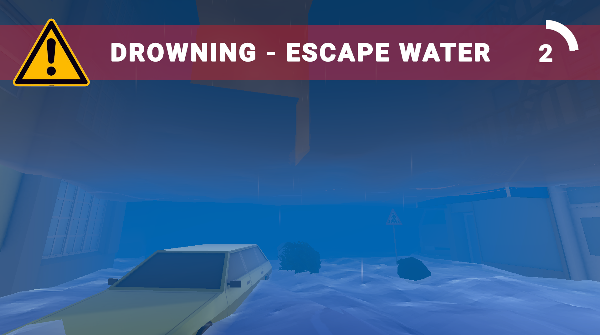
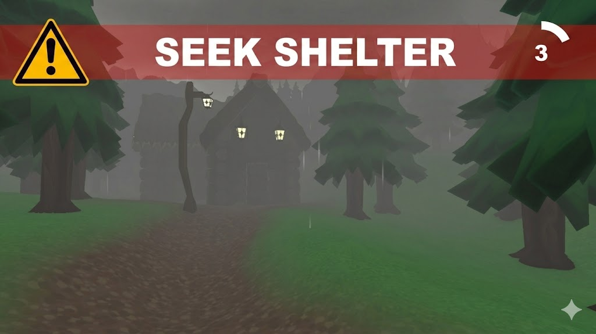

Educational 3D Survival Simulation
DISASTER MASTER
The game that saves lives.
Theory is no longer boring. Step into the disaster — and survive it.
scroll
The game that saves lives.
Theory is no longer boring. Step into the disaster — and survive it.
The numbers are stark. And the root cause is almost always the same — lack of preparation.
Annual deaths caused by natural disasters worldwide
Of those are children and teenagers aged 7–19
Suffer severe physical injuries every year
Reading about disasters doesn't train your instincts. Real survival requires muscle memory, not memorised bullet points.
Traditional safety education is passive. People listen, forget, and freeze when reality hits — because they've never experienced it.
Dry pamphlets and classroom lectures fail to engage. If the content doesn't stick, it can't save lives.
Most people believe disasters won't happen to them — until they do. Familiarity with danger is the first step to surviving it.
feel underprepared for real disaster situations
said they would use an educational game to learn survival skills
The scenarios and recommended actions in Disaster Master align with official emergency response protocols. We have presented the project to civil protection and safety experts, who verified its realism and educational accuracy, ensuring this kind of hands-on preparation can genuinely save lives.
Disaster Master places you inside the emergency. Make split-second decisions.
Face real consequences. Build instincts that last.
Safety rules are woven directly into gameplay. Players learn through actions and observe the direct link between choices and consequences — creating lasting knowledge.
Scenarios recreate conditions close to reality. Players practise specific actions in a safe virtual space — finding shelter, using fire extinguishers, evacuating smartly.
Emergencies are sudden, stressful, and fast. Our time-pressured levels train calm reasoning under stress — reducing panic when it matters most.
The environment reacts to every choice. Visual warnings, real-time indicators, and post-failure guidance help players understand mistakes and correct them immediately.

Every level is grounded in official safety guidelines and validated by civil protection experts.
The player is in a classroom when an earthquake suddenly begins. Books fall from shelves, textbooks and personal items scatter, and lamps and lighter objects swing or fall. The player must quickly hide under a sturdy desk, bureau, or door frame to protect themselves from collapsing or falling objects. Delaying increases the risk of injury, and successfully taking cover before time runs out means passing the level.
The player is in a small store when a strong earthquake shakes the building. Shelves sway and some topple, products and packaging scatter on the floor, and lamps and other tall objects shake and fall from the ceiling. Avoiding falling objects, the player must quickly orient themselves and reach the exit to escape outdoors, where they can seek a safe space. The main goal is to move as far away as possible from dangerous and unstable objects to prevent the risk of injury.
The player is in a kitchen where a pot has caught fire on the stove. The fire begins to grow, and smoke gradually fills the room. The first task is to signal the incident by calling 112. Then the player must carefully turn off the heat source by switching off the stove. The next step is to use a fire extinguisher suitable for kitchen fires (Class F) to control the flames while monitoring their safety; alternatively, they can cover the pot with a tight lid to cut off the oxygen supply. The player can open the window to ventilate the room. Once the fire is controlled, the player must leave the kitchen.
The player is in an office building engulfed in fire. The space is heavily smoked, visibility is limited, and fallen objects, overturned furniture, and the fire obstruct evacuation. The player's goal is to orient themselves quickly and move towards the nearest safe emergency exit. Due to the smoke, the player must move low to the ground and crouched to maintain visibility and avoid inhaling smoke.
The player is in a warehouse that is gradually flooding due to burst water pipes. The player's task is to find all the damaged valves and stop the flow to prevent the water from rising, then reach the stairs and evacuate safely before the room fills completely with water.
The player is on a street during a sudden flash flood. A powerful tidal wave quickly floods the area, raising the water level and creating a strong current. The only chance of survival is to immediately move forward to a higher and safer zone. Along the way, the player encounters various obstacles such as floating debris gathered by the water, blockages from swept-away cars, and damaged infrastructure. Any hesitation or delay increases the risk of falling into the dangerous current.
The player is in a high mountain forest during a dangerous thunderstorm. Lightning, thick fog, and torrential rain severely reduce visibility and make orientation difficult. The goal is to follow the marked trail without deviating from the route to reach a mountain hut. Along the way, the player must avoid dangerous areas and falling trees that can block the passage. The level is considered successfully completed upon reaching the hut and entering a safe zone.
Controls the core physics, event sequences, and success/failure conditions for every disaster scenario.
Manages realistic player movement: standing, crouching under smoke, sprinting, and interacting with the 3D environment.
Delivers verified safety protocols. If a player fails, it provides immediate, actionable feedback on what went wrong.
Handles real-time task objectives, critical situation timers, and synchronized alerts to keep players informed under pressure.
Built with a dynamic language system, allowing the game to seamlessly switch between English, Bulgarian, and future languages.
Designed as a scalable foundation. New levels, disasters, and mechanics can be plugged in without rewriting core systems.










Disaster Master is built on a modular foundation — everything is designed to grow. Here's the roadmap:
Tornadoes, industrial accidents, chemical spills — new disaster categories with unique mechanics and safety lessons.
Hospitals, schools, shopping centres, public transport — expanding the range of environments players must navigate in a crisis.
Growing the TikTok and Instagram presence to reach more young people with the message that preparedness saves lives.
Partnering with educational institutions to integrate Disaster Master into official disaster preparedness curricula across Bulgaria.
Built from scratch by two 10th-grade students who believed that education doesn't have to be boring — and that a game could genuinely save lives.
Visual Design & Interface · UI/UX · Module Integration · Localisation

Programming Logic & Systems · Player Control · Disaster Mechanics · Environment
Supervised By
ППМГ "Акад. Никола Обрешков" — Бургас · Class 10D
Free to download. Runs on Windows. No installation required. Just unzip and play.
Free forever. Built to protect, not to profit.